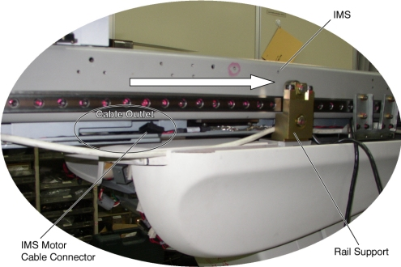

| NOTE: | Cable Outlet Cable Outlet There is not enough space between the rail support and the IMS frame for the cable connector to pass through. By moving the cable outlet of the IMS to behind the rail support, the cable connector can be removed through this space. |
Illustration 8: Cable Outlet of IMS Frame
